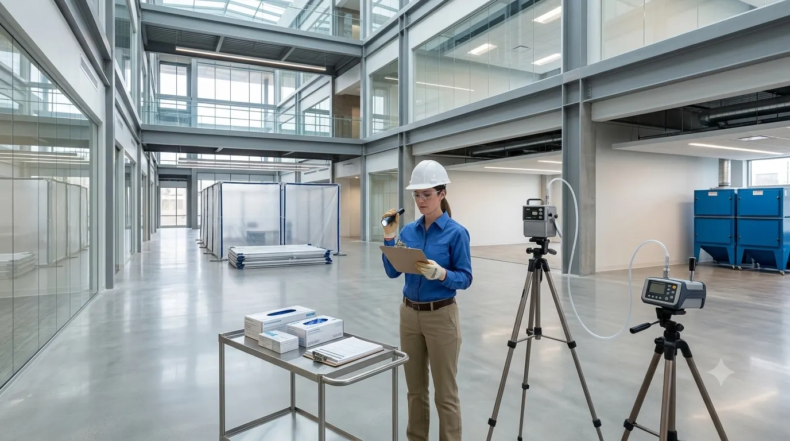
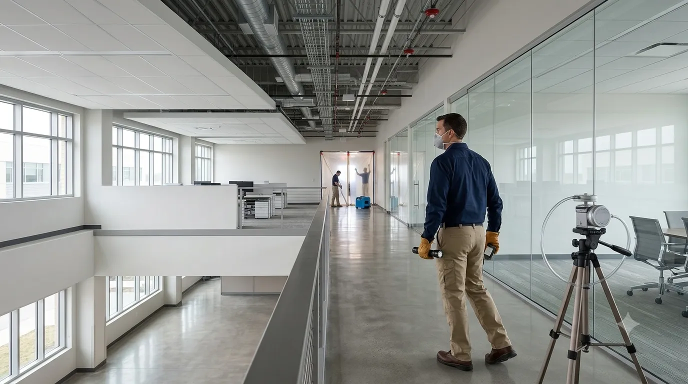

Professional Air Clearance Inspection Services
California Building Environment provides independent air clearance inspections, post-remediation visual inspections, air sample collection, and environmental consulting throughout Southern California.
Air samples collected during clearance inspections are submitted to AIHA-LAP, LLC accredited laboratories for TEM analysis per AHERA (40 CFR 763 Appendix A) or ISO 10312, and/or PCM per NIOSH 7400 as project specifications require. Laboratory testing is performed by the accredited laboratory, while we provide independent inspections, documentation, and reporting.
Independent Post-Remediation Air Clearance Inspections
Air clearance inspections are typically performed after asbestos abatement or other environmental remediation work has been completed. The purpose is to perform an independent visual inspection and collect air samples, when required, to document project conditions.
Collected air samples are submitted to AIHA-LAP, LLC accredited laboratories for TEM analysis per AHERA (40 CFR 763 Appendix A — aggressive sampling, 5+ samples inside containment, blanks, and outdoor comparisons) or ISO 10312, and/or PCM per NIOSH 7400 for non-school projects. Clearance criteria: AHERA TEM ≤70 s/mm² (or Z-test vs. outdoors); PCM <0.01 f/cc. Laboratory findings are included in a comprehensive clearance report documenting inspection observations, sample locations, analytical results, statistical evaluations, and pass/fail determinations.
Because California Building Environment does not perform asbestos abatement or remediation services, our clearance inspections remain objective and independent.

Common Projects That Require Air Clearance Testing
Independent air clearance inspections are required after asbestos abatement in schools (AHERA), public/commercial buildings (NESHAP/Cal/OSHA), and residential projects. Clearance types: AHERA TEM (5+ aggressive samples, ≤70 s/mm²), PCM visual + <0.01 f/cc, and project-specific protocols. We also provide post-remediation verification for mold, lead, and other environmental projects.
Asbestos Abatement — AHERA Schools
Mandatory TEM clearance per 40 CFR 763 Appendix A after any asbestos response action in K-12 schools: aggressive sampling, minimum 5 samples inside containment, blanks, outdoor comparison, Z-test statistical evaluation against 70 s/mm² criterion.
Asbestos Abatement — NESHAP / Cal/OSHA
Post-abatement visual inspection (no visible debris/dust) followed by PCM (NIOSH 7400) or TEM clearance per project specification, Cal/OSHA 1529, NESHAP, and local air district requirements for commercial, industrial, and public buildings.
Residential Asbestos Projects
Clearance inspections for residential asbestos abatement (popcorn ceiling, floor tile, pipe insulation) using PCM or TEM per project scope, with documentation for homeowners, contractors, and insurance claims.
Mold Remediation Clearance
Post-remediation verification per IICRC S520: visual inspection (no visible mold, no dust), moisture verification (dry standard), and airborne spore trap sampling with indoor/outdoor comparison to document Condition 1 ecology restoration.
Lead Abatement Clearance
Post-abatement dust wipe sampling per HUD Guidelines (Chapter 15) and EPA 40 CFR 745.227 for clearance examination of lead hazard reduction activities in target housing and child-occupied facilities.
Project-Specific Protocols
Custom clearance protocols for healthcare (ICRA), pharmaceutical, semiconductor, aerospace, and other controlled-environment facilities with project-specific acceptance criteria, sampling plans, and documentation requirements.
Schools & Healthcare
Educational and healthcare facilities frequently require independent environmental verification following remediation activities.
Government Projects
Public agencies often require independent clearance documentation before project completion.
Property Owners
Owners and facility managers may request independent verification that remediation work has been completed before reoccupying affected areas.
Professional Air Clearance Inspection Process
Project Review
Review project documentation, work scope, and clearance requirements before the site visit.
Visual Inspection
Perform an independent visual inspection of the completed work area to evaluate overall project conditions.
Air Sample Collection
When required, representative air samples are collected using accepted industry procedures and submitted to accredited laboratories.
Clearance Report
Inspection observations and laboratory findings are documented in a comprehensive clearance report.

What Our Air Clearance Inspection Includes
Each project is unique. Our clearance inspections are tailored to the specific project requirements and may include:
- Independent visual inspections
- Post-abatement inspections
- Air clearance sample collection
- Documentation of sample locations
- Coordination with accredited laboratories
- Project documentation review
- Commercial projects
- Residential projects
- Industrial facilities
- Healthcare facilities
- Educational facilities
- Government projects
- Independent third-party reporting
- Comprehensive clearance documentation
Air Clearance Testing FAQs
Do you perform laboratory analysis?
No. California Building Environment performs the inspection and collects air samples when required. Samples are submitted to accredited laboratories for analysis. Laboratory testing is performed by the laboratory.
Do you perform asbestos abatement?
No. We provide independent inspections, air clearance testing, environmental consulting, and professional sample collection only. We do not perform asbestos abatement or remediation services.
How long does an air clearance inspection take?
Inspection time varies depending on the size of the work area, project requirements, accessibility, and the number of air samples required.
When will laboratory results be available?
Turnaround time depends on the accredited laboratory and the requested analysis schedule. Results are included in the final clearance report after laboratory analysis is complete.
Who requests air clearance testing?
Property owners, contractors, project managers, schools, healthcare facilities, industrial facilities, consultants, and government agencies commonly request independent air clearance inspections.
Regulatory Framework
Air clearance testing ensures that abatement work areas meet regulatory standards before reoccupancy:
- EPA NESHAP Clearance Levels — Federal clearance standards require visual inspection and air sampling before reoccupancy after asbestos removal.
- SCAQMD Clearance Requirements — South Coast Air Quality Management District specifies clearance sampling requirements for asbestos projects in the South Coast basin.
- NIOSH Method 7400 (PCM) and EPA AHERA (TEM) analytical protocols.
Clearance testing is performed by independent inspectors who were not involved in the abatement project, ensuring objective results with no conflict of interest.
Do I Need Air Clearance Testing?
Check if any of these apply to your project:
If you checked one or more, schedule air clearance testing.
Request Clearance TestingRequest a Quote
Need Independent Air Clearance Testing?
California Building Environment provides independent air clearance inspections, professional air sample collection, and environmental consulting throughout Southern California.